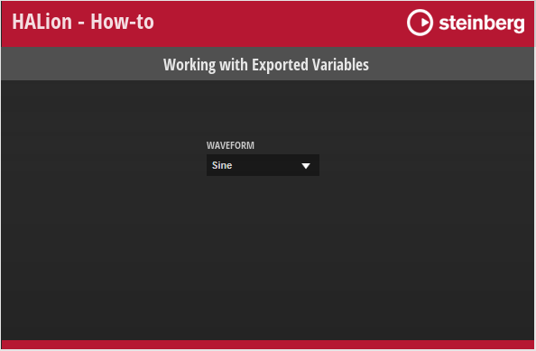

/ HALion Developer Resource / HALion Tutorials & Guidelines / How-tos /
Working with Exported Variables
(Since HALion 7.0)
On this page:
UI variables can be defined within any template. The UI variables inside a template can be used to connect multiple controls, for example. By exporting the value of a property and the UI variable itself to the same template parameter, you create an interface for connecting engine parameters outside of the template to the property and UI variable within the template. The following example illustrates this using a single-level pop-up menu. An example of a multi-level pop-up menu using an exported variable can be found in Custom Multi-Level Menu II.
Single-Level Pop-up Menu
The single-level pop-up menu is implemented through a combination of a Selector, a Menu and a MenuEntry template. The Selector template opens the Menu template for selecting the values and contains the controls for displaying the display string of the connected engine parameter. The Menu template contains four MenuEntry templates which represent the selectable values.
Example VST Preset

To explore the templates in this example:
- Load Working with Exported Variables.vstpreset.
- Open the Macro Page Designer, go to the Templates Tree and select the template you want to explore.
- Click Edit Element
 to examine the template.
to examine the template.
Overview
In this example, there is one exported UI variable. Look for the the sel UI variable inside the Selector template.

Within the Selector template, the sel UI variable and the Value property of the Text control are both exported as 'Value'. This creates the interface for connecting the engine parameter, in this case, the oscillator type of Zone 1.

The Popup parameter of the Selector template is defined to open the Menu template. The Menu template contains four MenuEntry templates which represent the values that you can select.

The Value property of the MenuEntry template has the sel UI variable assigned. As a result, the currently selected value will be sent to the Selector template that is connected to the engine parameter and the Text control within the Selector template shows the display string of the engine parameter.

How the Elements Interact
Selector
The Selector template contains the elements that are required to open the Menu template and display the selected value.

UI Variables
| Variable | Description | Type |
|---|---|---|
| sel | This variable is used by all menu entries of the pop-up menu. sel is exported as 'Value' and combined with the Value property of the Text control. As a result, the display string of the connected engine parameter will be displayed instead of the integer value. | Integer |
Controls and Subtemplates
| Element | Description |
|---|---|
| Switch | A Switch control that opens the popup menu. Its Popup Template property is exported as 'Popup'. This allows you to select which pop-up menu to open for each instance of the Selector template. |
| Text | A Text control for displaying the display string of the connected engine parameter. This is achieved by exporting the Value property as 'Value'. Since the sel UI variable is also exported as 'Value', both are combined into one template parameter, creating the interface for connecting the engine parameter. |
| Triangle | An Image control to indicate that a pop-up menu can be opened. |
| Decor | A Decor control used as background. |
| Label | A Label control for displaying the name of the connected parameter. Its Text property is exported as 'Label'. This allows you to name the Selector template differently for each instance. |
Menu
The Menu template contains four MenuEntry templates that define the entries of the menu.
| Element | Description |
|---|---|
| Sine, Triangle, Saw, Square | These represent the four entries of the submenu. They use the MenuEntry template which defines the look and functionality of an entry. The OnValue parameter of each MenuEntry template must be set to the corresponding value of the engine parameter it selects. This value will be sent to the sel variable. See MenuEntry and Selector/UI Variables for details. The Label parameter defines the name of the entry to be displayed in the menu. |
MenuEntry
This template represents one entry in the Menu template. It consists of two elements:
Controls and Subtemplates
| Element | Description |
|---|---|
| Label | A Label control to display the name of the menu entry. Its Text property is exported as 'Label'. This allows you to name the template differently for each instance. |
| Switch | A Switch control with exclusive mode. The OnValue property is exported to be set by each instance of the template. See Menu for details. The Value property must be set to @sel, the UI variable of the Selector template. The OnValue will be sent to the Value parameter which is sent to the sel variable. As a result, the currently selected value will be sent to the Selector template which is connected to the engine parameter and the Text control within the Selector template shows the display string of the engine parameter. |
❕ Pop-up menus can only be displayed within the dimensions of the macro page. If a pop-up menu is too large, it will be clipped. To prevent this, you can either change the direction in which the pop-up menu opens, e.g., open it to the top instead of to the bottom, or you can change the size of the template, so that it fits, and then activate the scrollbar to be able to scroll to the available entries.